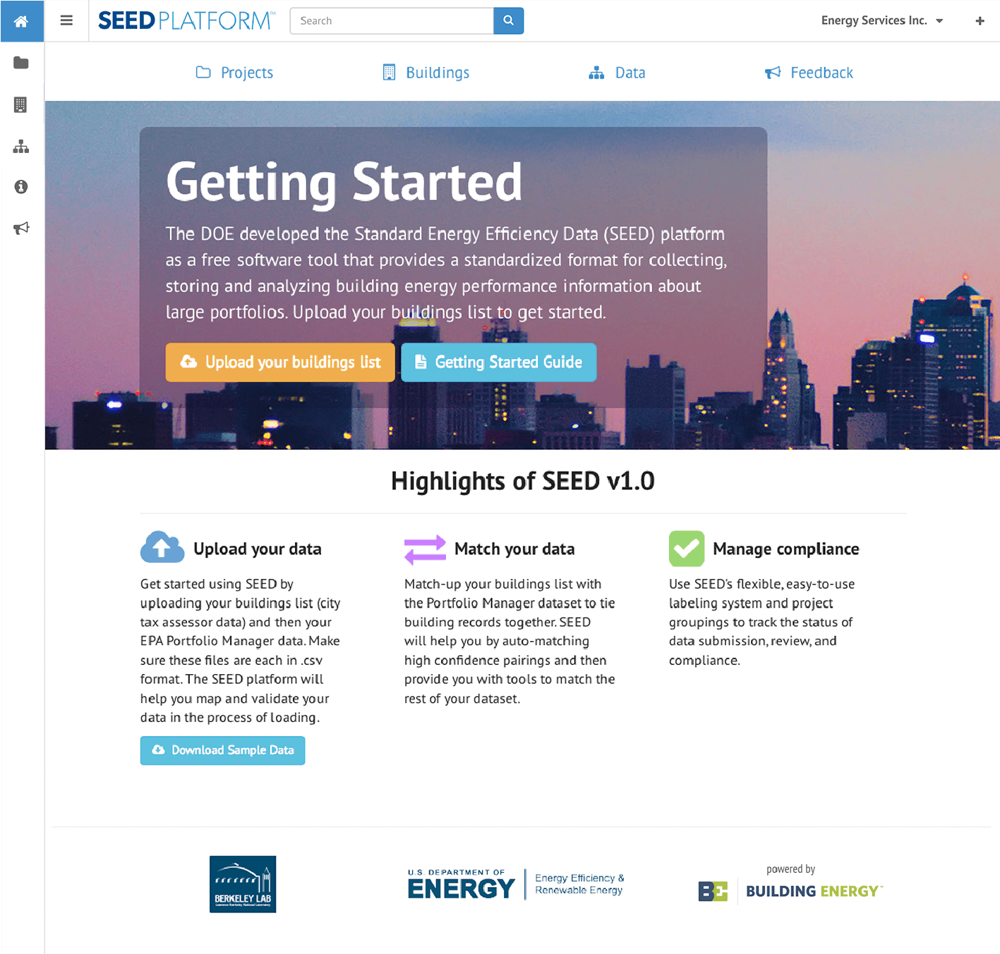
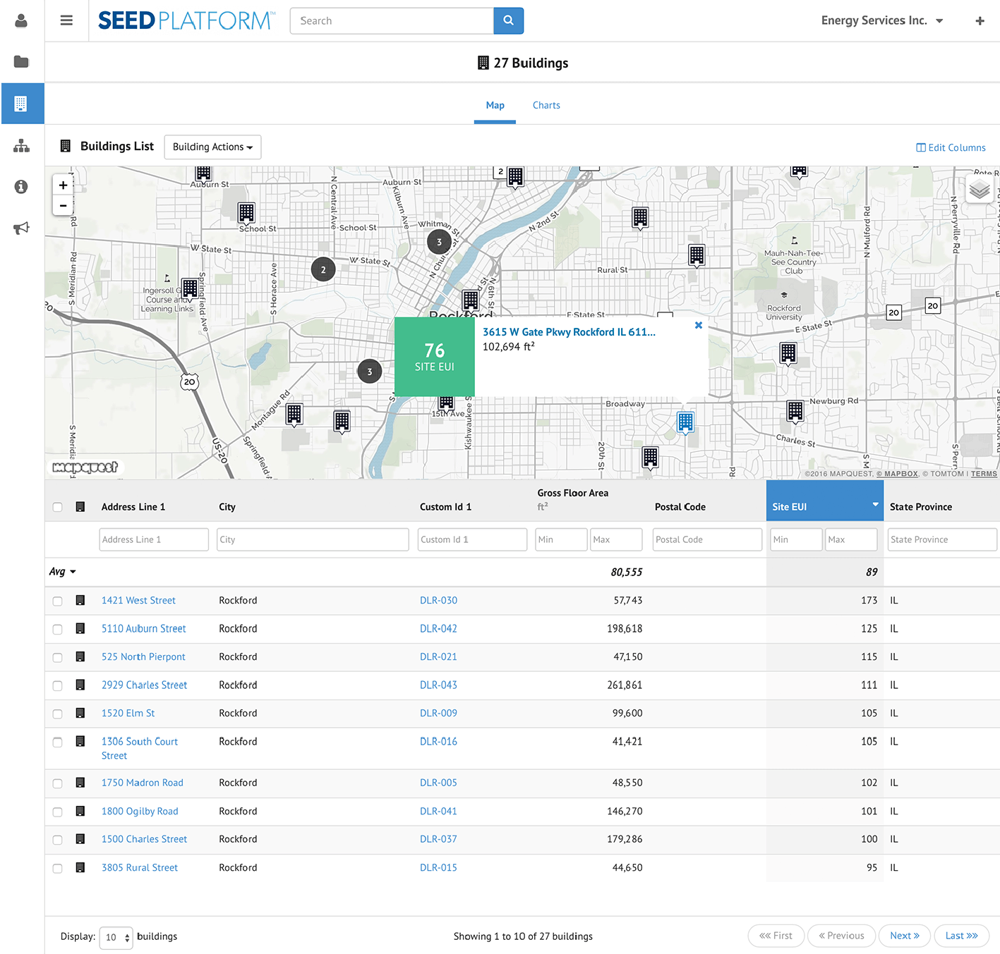

U.S. Department of Energy - Standard Energy Efficiency Data (SEED) Platform
Product strategy, UX / UI design, data visualization, app development
The Standard Energy Efficiency Data (SEED) Platform is an open source software application that fills a major market need for data-driven energy efficiency program design and implementation. The SEED Platform enables streamlining of complex building data and allows users to share selected data with partners or make it publicly available.
Standard Energy Efficiency Data (SEED) On-boarding
Interactive map and data tables to search, manage, and share building energy data sets.
